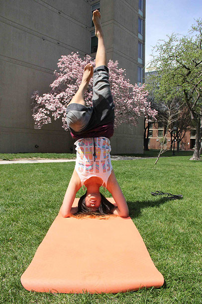
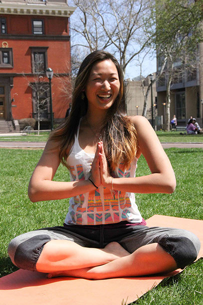

<
>
Seaon Shin sits in the third row of Levine Hall in the Wu and Chen Auditorium with her three PillPal teammates in the adjoining seats — Lyles Swift, Wyatt Shapiro and Eric Chao. It’s the final round of PennVention, Penn’s annual tech innovation competition that offers over $20,000 worth of prizes. Nearly 100 candidates submitted proposals, and PillPal is one of the eight finalists.
The first group takes the stage, and Seaon watches the slideshow from the edge of her seat with taut shoulders. She’s on deck to pitch her brainchild, PillPal, a smart, multi-pill dispenser, to the seven judges. She adjusts her hair a few times and settles on a low ponytail before heading to the podium.
“Last semester, [my product design class was] talking about applying smart technologies to dumb objects,” Seaon says from center stage. “And I thought, ‘Wouldn’t it be fascinating if you could apply a smart nanoscale to a pill dispenser, and be able to connect with people far away?’”
Seaon opens her presentation with the story of her mother, Yunsun, who lives in Dubai and has been battling an autoimmune disease for 20 years. Yunsun inspired Seaon to create PillPal.
Because the PillPal device syncs with a mobile app, it would allow Seaon to keep track of her mother’s medical adherence. Juggling numerous medications often leads to unintentional neglect and mix-ups, a problem for 75 percent of Americans. That adds up to about $4,000 in wasted medicine per patient per year — a $300 billion cost for the U.S. government. PillPal aims to reduce these expenses by sending notifications to your phone reminding you when and how to take your medication.
But most importantly, PillPal is a source of encouragement. The mobile app allows friends and family all over the world not only to monitor a loved one’s medical performance, but also to send supportive messages or videos. Even the devices’ sleek, cylindrical shape is more encouraging than a standard orange pill bottle, which Seaon believes symbolizes disempowerment and sickness.
“We imagine and envision a world where taking medicine is an empowering experience,” Seaon says, concluding her PennVention presentation. “And we believe that PillPal ... can change the way we take medicine.”
A GLOBAL BEGINNING
Seaon is all about youth empowerment. Back in her room on Pine Street, she explains that her passion for social impact started before PillPal — even before Penn.
While growing up in Indiana, Seaon’s neighbors introduced her family to the Baha’i faith. Founded in 1844 in Persia, Baha’i is a modern religion based on the unity of all people and beliefs.
Over the years, Seaon’s entire family converted from Christianity to Baha’i. “The main driving factor was the focus on education and nonjudgment,” she said. Baha’i champions education and service — fertile ground for Seaon’s own curiosity. Through Baha’i, understanding and improving humanity became central to her childhood.
“They believe that religion should be progressive, which I really like,” Seaon says. “If humans are progressive, then why shouldn’t religion [be]?” Although she moved around a lot as a child — from California to Indiana to New Mexico — Baha’i ideals remained the framework for her outlook on life.
In 2003, Yunsun had to go to Seoul for various treatments. Seaon gave up her last year of junior high and homeschooled herself through eighth grade so she could care for her mother through this rigorous process.
“One day coming back from the treatment, wherever I [looked I saw] some beautifully-made origami objects with a message,” Yunsun recounted. “She thoughtfully made them and placed them in various locations in Grandma’s house, thinking that it [would] give me some space to smile and relax. Whenever I think of that situation, my heart is filled with warm energy blissful and tearful. She was 14.”
At one point, Seaon’s parents wanted to go back to Korea, but Seaon and her sister Hayon pleaded against it. “I could not survive the education system. I would die there,” Seaon said, laughing. “I was like, ‘Please don’t go.’ And then they found a happy medium and were like, ‘Oh we’ll stop in the middle of the desert’”— the desert being Dubai. Yunsun got a job teaching graphic design at Zayed University, and the family moved there in 2007.
MINDING THE GAPS
Although she loves the fast-paced multiculturalism of Dubai, Seaon was disillusioned by the socioeconomic discrepancies — 12-year-olds riding limos to their birthday parties contrast with the poor public schools of the city. “It’s sometimes a little bit hard to center yourself in terms of finding a spiritual and material balance,” she said.
The feelings subsided when Seaon found a passion in service projects. Through community and environmental work, “I discovered a sense of inner peace and identity,” she said. “I was like, ‘Oh my god, if I could share this with other young people, we could together grow and build this community.”
But many youth struggle to discover what matters to them, let alone know how to pursue it. Despite Dubai’s affluence, the city lacks any sort of structure geared toward fostering innovation.
The Global Youth Empowerment Movement aims to fill that gap. GYEM is Seaon’s social enterprise based in Dubai that promotes self-discovery and entrepreneurship. Through workshops designed by educators, life coaches and students, participants gain the tools and networks to develop their ideas. Seaon deferred her entry to Penn one year in 2010 to co-found this nonprofit organization with her mother. Yunsun loved being a mother-daughter “power couple.”
“We all want to be doing something meaningful with our lives,” Seaon said. “I think that’s a pretty universal sentiment. It’s not that [the youth] don’t want to do something meaningful, it’s they don’t know how. So for us, it’s if we can give young people the tools, then maybe we could inspire them.”
Seaon took a second gap year last year to develop the company and managed to raise over $250,000 for GYEM last year — $50,000 of that came from a contract with Pepsi to run a workshop for 200 underprivileged kids.
Despite her success, Seaon’s age provokes skepticism in adults who don’t take her seriously. “GYEM was one of the best communities of youth I’ve worked with,” says Hayon Shin, Seaon’s younger sister and Creative Director of GYEM. “Unfortunately, being youth also meant that having to deal with older people and their outdated and rigid ways was a pain.”
That is not the case in the GYEM office, where Seaon and Suzan Shedid, the operations manager of GYEM, have been working together for four years. Shedid admires Seaon for the way she motivates her colleagues to create a productive, energetic work environment. She knows how to get what she wants — at the end of the day, that’s what GYEM is all about. She’s “not your traditional colleague,” says Shedid. “She’s outgoing, likes connecting with people’s interests and knowing their story. In one word: empathic.”
“We all want to be doing something meaningful with our lives. I think that’s a pretty universal sentiment."
-Seaon Shin
AT PENN, AND BEYOND
Although she loves the fast-paced multiculturalism of Dubai, Seaon was disillusioned by the socioeconomic discrepancies — 12-year-olds riding limos to their birthday parties contrast with the poor public schools of the city. “It’s sometimes a little bit hard to center yourself in terms of finding a spiritual and material balance,” she said.
The feelings subsided when Seaon found a passion in service projects. Through community and environmental work, “I discovered a sense of inner peace and identity,” she said. “I was like, ‘Oh my god, if I could share this with other young people, we could together grow and build this community.”
But many youth struggle to discover what matters to them, let alone know how to pursue it. Despite Dubai’s affluence, the city lacks any sort of structure geared toward fostering innovation.
The Global Youth Empowerment Movement aims to fill that gap. GYEM is Seaon’s social enterprise based in Dubai that promotes self-discovery and entrepreneurship. Through workshops designed by educators, life coaches and students, participants gain the tools and networks to develop their ideas. Seaon deferred her entry to Penn one year in 2010 to co-found this nonprofit organization with her mother. Yunsun loved being a mother-daughter “power couple.”
“We all want to be doing something meaningful with our lives,” Seaon said. “I think that’s a pretty universal sentiment. It’s not that [the youth] don’t want to do something meaningful, it’s they don’t know how. So for us, it’s if we can give young people the tools, then maybe we could inspire them.”
Seaon took a second gap year last year to develop the company and managed to raise over $250,000 for GYEM last year — $50,000 of that came from a contract with Pepsi to run a workshop for 200 underprivileged kids.
Despite her success, Seaon’s age provokes skepticism in adults who don’t take her seriously. “GYEM was one of the best communities of youth I’ve worked with,” says Hayon Shin, Seaon’s younger sister and Creative Director of GYEM. “Unfortunately, being youth also meant that having to deal with older people and their outdated and rigid ways was a pain.”
That is not the case in the GYEM office, where Seaon and Suzan Shedid, the operations manager of GYEM, have been working together for four years. Shedid admires Seaon for the way she motivates her colleagues to create a productive, energetic work environment. She knows how to get what she wants — at the end of the day, that’s what GYEM is all about. She’s “not your traditional colleague,” says Shedid. “She’s outgoing, likes connecting with people’s interests and knowing their story. In one word: empathic.”
“Being friends with Seaon has kept me thinking how I can combine my interests and skills with a responsibility to make the world a better place.” sentiment."
-Brennan Cusack, College Senior
Photos by Alice Ren
Video by Neha Nayak
Page by Analyn Delos Santos